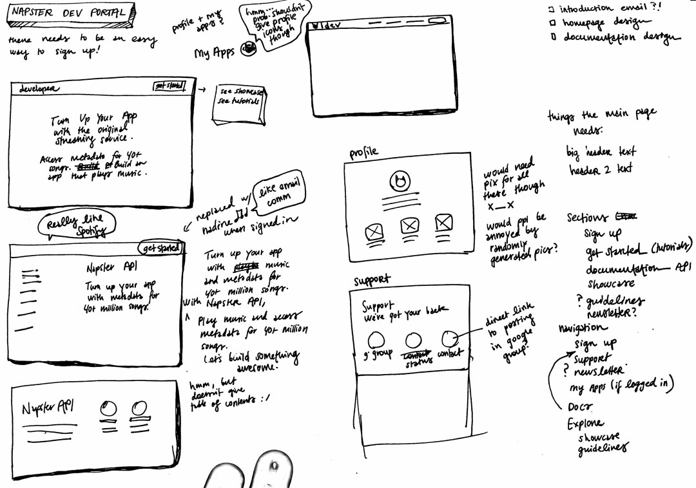
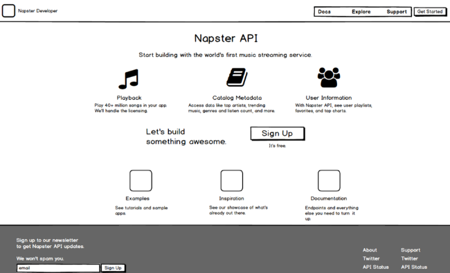
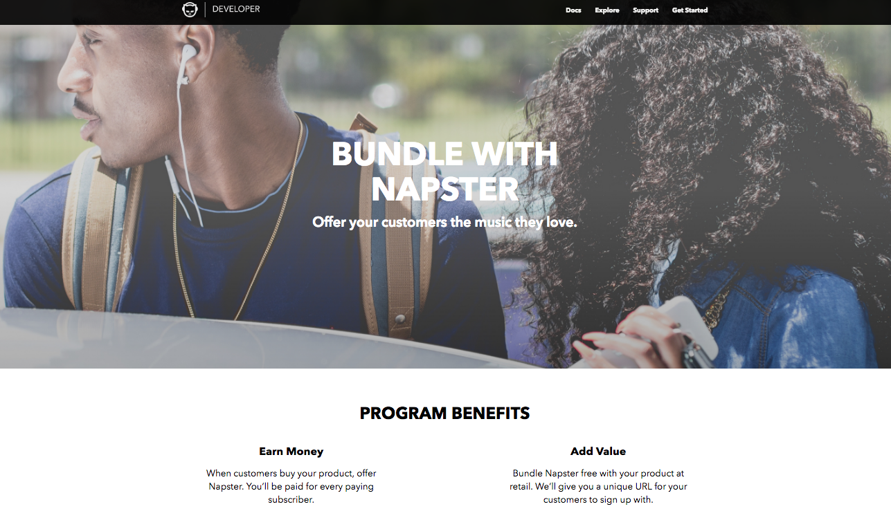

Project: Developer Portal Redesign
This project is a redesign of the website used by developers to access Napster's API, which can be used to play music. The objective was to:
- Update the website to solve known usability problems, and
- Make it easier for people to know that they can partner with Napster.
The updated redesign
Process
First, I worked with the API team to survey current API users to learn what they wanted out of the portal. We learned of some existing issues, such as confusion about whether developers needed to pay money in order to use the API. I also confirmed desired outcomes for the website, which included providing clearer information about Napster partnerships, and an easy way for developers to sign up. Competitive analysis on other API sites also gave me more ideas on how to improve the portal design overall.
Initial sketches for the developer website design
After initial research and sketches, I created a low-fidelity prototype using Balsamiq and ran it through usertesting.com to determine usability issues in the overall layout and content. Participants were screened for familiarity with APIs.
Low-fidelity prototype of redesign (made with Balsamiq)
Once we found solutions to our main problems, I gave the low-fidelity mockup to our UI designer. He created a design language that I used to create high-fidelity mockups using Sketch.
High-fidelity mockup of one of the partnership pages
Again, I tested the high-fidelity mockups through a usertesting.com study to ensure the final look was easy to understand. Then, I handed the mockups off to the development team using Zeplin.
Outcomes
When the website was live, I ran another usertesting.com study to obtain feedback. Along with uncovering new opportunities for improvement, we received positive feedback on the cleanliness and coherence of the design. Additionally, so many people were now requesting partnership information that the next design iteration called for automation in responding to the requests. :)
Participant Feedback on the "Final" Design
“First impressions, [this website] looks really in-depth. It looks user-friendly. it pretty much lays out exactly what I need to know about the API. It looks...the fact that they point out there's documentation is great, I like the fact that they offer examples and tutorials. When you're starting out with a new API, that's super helpful.”
“I'm definitely encouraged by how clean this [design] is, because that indicates to me that the API itself would also be clean. And that is something that I think [Napster] could offer over competitors for sure. Especially since there's a dedicated website to it.”